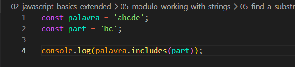
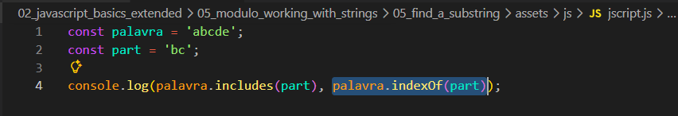
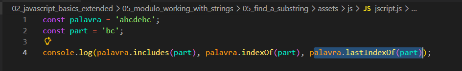
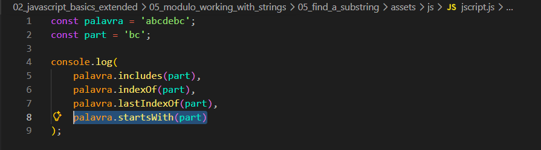

Find a substring
Intro
Aqui como exemplo de aprendizagem teremos o seguinte codigo:

Aqui como exemplo de aprendizagem teremos o seguinte codigo:

Declaramos uma variavel chamada 'palavra' e atribuimos a ela o valor'abcde'; e apos isso criamos mais uma variavel chamada part e atribuimos e atribuimos a ela o valor de 'bc;'.
Feito isso, iremos supor que iremos fazer um exercicio no qual queremos saber se uma string, contem uma sub string (uma parte da string) para isso o JS nos oferece o metodo muito conveniente chamado de includes().
Para usar o includes, primeiro chamamos a variável e utilizamos o ponto (.) seguido de includes().
Dentro dos parênteses, passamos o valor que queremos verificar. Exemplo: console.log(palavra.includes(part));.
Como resultado no console de nosso navegador teremos como resultado true. Isso pois nossa variavel part com valor de 'bc' tem em nossa variavel palavra
Agora iremos ver onde comeca o indice de nossa variavel part dentro da variavel palavra. Para isso usaremos o metodo indexOf, para usar ele, tambem chamamos primeiramente a variavel seguido de ponto (.) seguido por indexOf e como parametro passamos oque desejamos verificar, no caso part. Ficando da seguinte forma em nosso codigo:

Se quisermos encontrar no caso a ultima parte tambem, podemos utilizar de outro metodo sendo ele: lastIndexOf(part), ficando da seguinte forma

Com ele conseguimos verificar se a palavra(string) que buscamos comeca com o que queremos, se sim teremos como resultado em nosso console como true. Ficando da seguinte forma em nosso codigo:

Faz o oposto de startsWith, assim como o nome sugere ele verifica se nossa ultima palavra termina igual oque buscamos. Ficando da seguinte forma:
Alguem importante saber é que os metodos indexOf e lastIndexOf, se nossa verificacao nao for encontrada, entao sera retornado -1